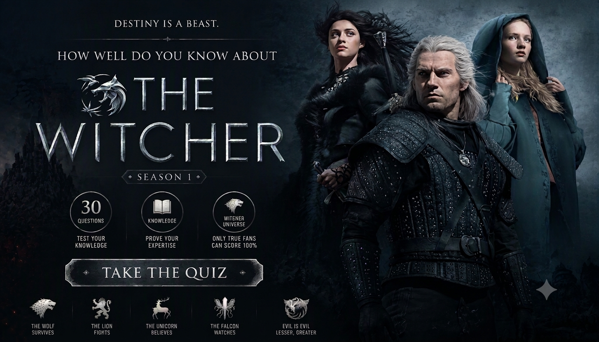

THE WITCHER • SEASON 1 • TV TRIVIA
The Witcher Season 1 Quiz
Think you know The Witcher Season 1? Test your knowledge of Geralt, Yennefer, Ciri, the monsters, the Law of Surprise and the battle against Nilfgaard.
Every question has four possible answers, but only one is correct. Recall the characters, monsters, prophecies and major events from the first season to prove your knowledge of the Continent.
This quiz contains major plot details and spoilers from The Witcher Season 1.


ABOUT THE QUIZ
The The Witcher Season 1 Quiz is a 40-question trivia challenge about the characters, monsters, kingdoms and events of the first season of the fantasy series.
Test your memory of Geralt of Rivia, Yennefer of Vengerberg, Princess Cirilla, the Law of Surprise, Renfri, the striga and the Battle of Sodden Hill.
The Witcher Season 1 Details
Series: The Witcher
Season: 1
Genre: Fantasy, action and adventure
Key Characters: Geralt of Rivia, Yennefer of Vengerberg, Princess Cirilla, Jaskier, Cahir and Tissaia de Vries
Key Themes: Destiny, the Law of Surprise, magic, monsters, political conflict and the Conjunction's legacy
Story: The lives of a monster hunter, a powerful sorceress and a young princess move toward a shared destiny as Nilfgaard threatens the Northern Kingdoms.
WHAT THIS QUIZ COVERS
The quiz tests your knowledge of important characters, magical creatures, locations, dialogue and events from the first season.
Geralt and the Monsters
Recall Geralt's encounters with the kikimora, the striga, Torque the sylvan and the events that earn him the name Butcher of Blaviken.
Yennefer and the Mages
Remember Yennefer's training at Aretuza, her relationship with Istredd, Tissaia's influence and the mages' role in the conflict with Nilfgaard.
Ciri, Cintra and Destiny
Test your memory of Ciri's royal family, her escape from Cintra, her time in Brokilon and her connection to Geralt.
Kingdoms and Major Events
Review the Law of Surprise, Renfri's story, the striga curse, the dragon hunt and the Battle of Sodden Hill.
HOW THE QUIZ WORKS
The quiz contains 40 questions. Each question has four possible answers, with exactly one correct answer.
Every correct answer earns 1 point. Incorrect answers earn 0 points. Your final score is converted into a percentage out of 100%.
The order of the questions is randomized whenever you start or restart the quiz. The answer choices stay attached to their question, and only one choice is correct for each question.
Quiz Navigation
Starting the quiz
Select START QUIZ on the opening screen to begin. The first question appears with four possible answers.
Selecting an answer
Select the option you believe is correct. Your choice is saved, and the quiz automatically advances shortly afterward.
Next and Back buttons
Use Next to move forward or Back to revisit a previous question. Your selected answers are saved as you move through the quiz, so you can review or change them.
Finishing the quiz
Answer all 40 questions. On the final question, submit your answers to view your score, percentage and Witcher knowledge result.
Try Again and Challenge Friends
Select TRY AGAIN to replay the quiz. You can also use SHARE MY RESULT or CHALLENGE YOUR FRIENDS to share your result.
FAQ
How many questions are in the quiz?
There are 40 questions, each with four possible choices and one correct answer.
What is the maximum score?
The maximum score is 100%. Each correct answer contributes 1 point before the result is converted into a percentage.
What topics are covered?
The quiz covers Geralt, Yennefer, Ciri, other characters, monsters, magical traditions, kingdoms and major Season 1 events.
Can I take the quiz again?
Yes. Select TRY AGAIN after viewing your result to start another attempt with the questions in a new order.
Can I challenge my friends?
Yes. Use CHALLENGE YOUR FRIENDS after completing the quiz to share it with others.
Spoiler Warning
This quiz contains spoilers for The Witcher Season 1, including character revelations, curses, deaths and major battles.
Consider watching the season before taking the quiz if you want to avoid spoilers.